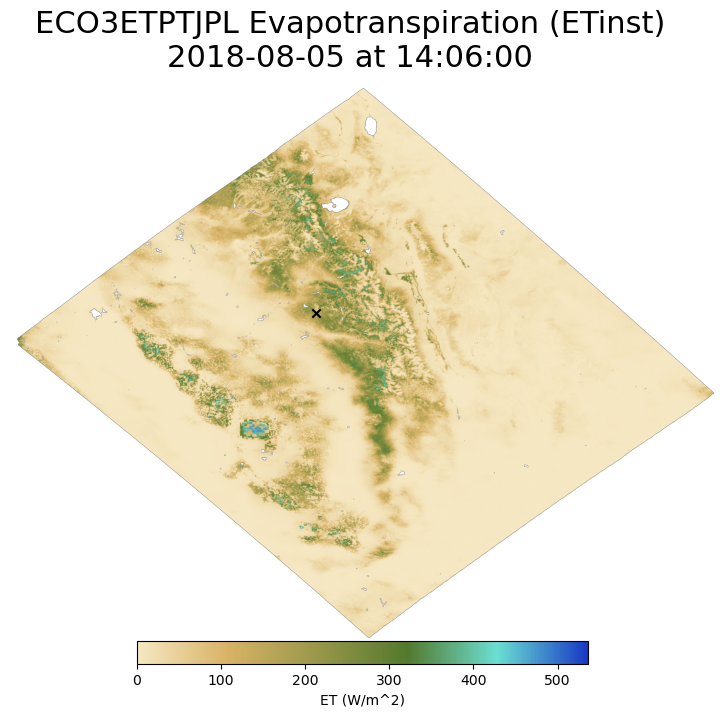
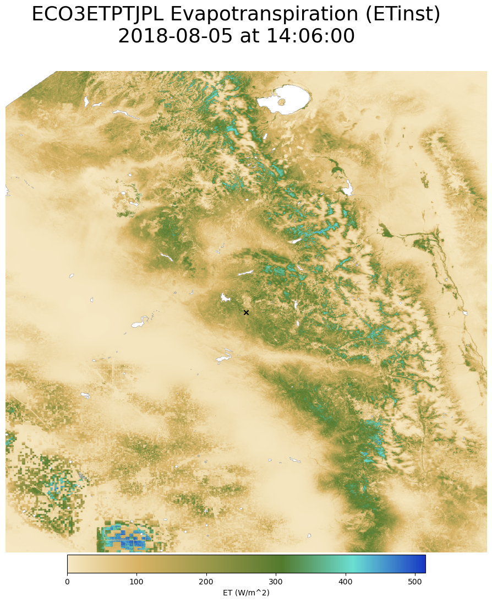
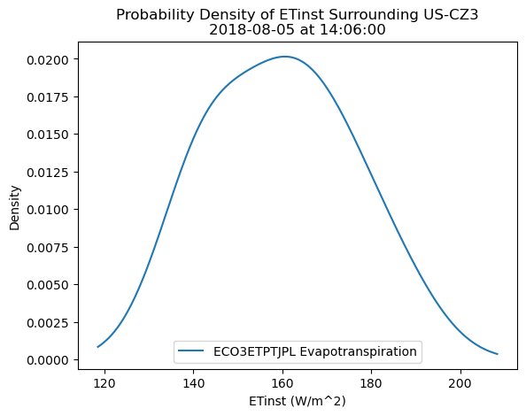
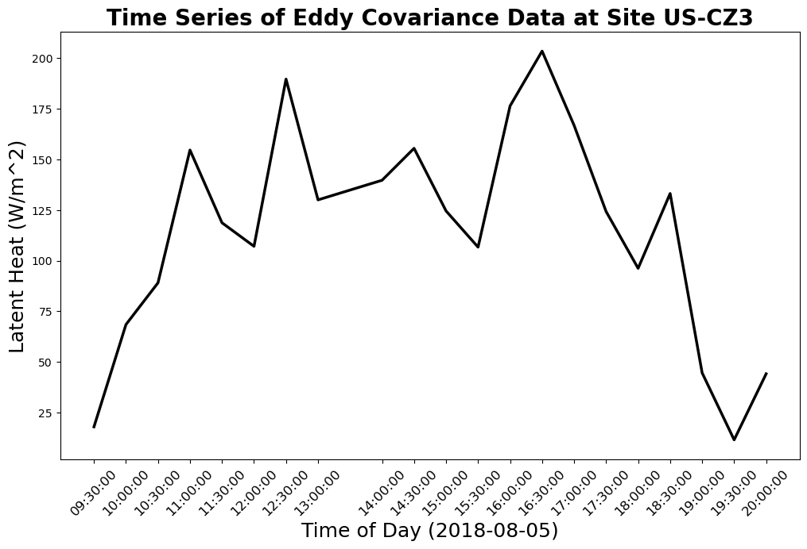
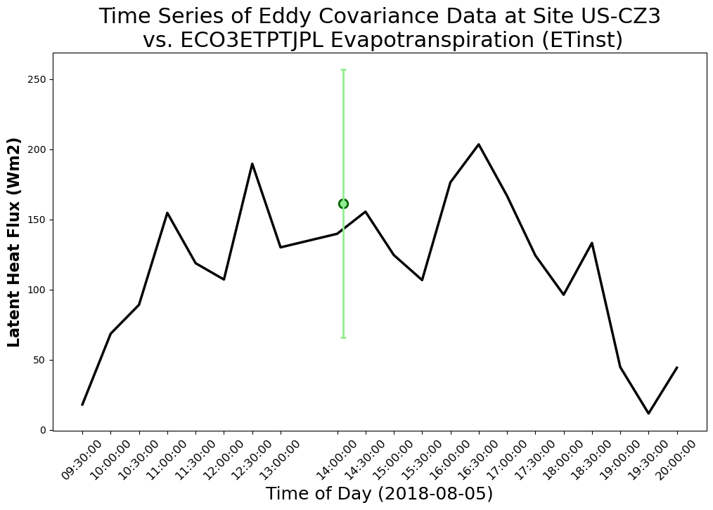

# Import packages
import warnings
warnings.filterwarnings('ignore')
import h5py
import os
from os.path import join
import pyproj
import numpy as np
import pandas as pd
import datetime
from dateutil import parser
import matplotlib.pyplot as plt
from matplotlib.colors import LinearSegmentedColormap
from pyresample import geometry as geom
from pyresample import kd_tree as kdt
from osgeo import gdal, gdal_array, gdalconst, osr
# Set plots inside of the Jupyter Notebook
%matplotlib inlineWorking with ECOSTRESS Evapotranspiration Data
This tutorial demonstrates how to work with the ECOSTRESS Evapotranspiration PT-JPL Daily L3 Global 70m Version 1 (ECO3ETPTJPL.001) data product in Python.
The Land Processes Distributed Active Archive Center (LP DAAC) distributes the Ecosystem Spaceborne Thermal Radiometer Experiment on Space Station (ECOSTRESS) data products. The ECOSTRESS mission is tasked with measuring the temperature of plants to better understand how much water plants need and how they respond to stress. ECOSTRESS products are archived and distributed in the HDF5 file format as swath-based products.
In this tutorial, you will use Python to perform a swath to grid conversion to project the swath data on to a grid with a defined coordinate reference system (CRS), compare ECOSTRESS data with ground-based AmeriFlux flux tower observations, and export science dataset (SDS) layers as GeoTIFF files that can be loaded into a GIS and/or Remote Sensing software program. ### Example: Converting a swath ECO3ETPTJPL.001 HDF5 file into a GeoTIFF with a defined CRS and comparing ECOSTRESS Evapotranspiration (ET) with ground-based ET observations from an AmeriFlux flux tower location in California.
#### Data Used in the Example:
- Data Product: ECOSTRESS Evapotranspiration PT-JPL Daily L3 Global 70m Version 1 (ECO3ETPTJPL.001)
- Science Dataset (SDS) layers:
- ETinst
- ETinstUncertainty
- Data Product: ECOSTRESS Geolocation Daily L1B Global 70m Version 1 (ECO1BGEO.001)
- Science Dataset (SDS) layers:
- Latitude
- Longitude
- Data Product: AmeriFlux Ground Observations for Flux Tower US-CZ3: Sierra Critical Zone, Sierra Transect, Sierran Mixed Conifer, P301 - Variables:
- Latent Heat (W/m\(^{2}\))
# Topics Covered: 1. Getting Started
1a. Import Packages
1b. Set Up the Working Environment
1c. Retrieve Files
2. Importing and Interpreting Data
2a. Open an ECOSTRESS HDF5 File and Read File Metadata
2b. Subset SDS Layers
3. Performing Swath2grid Conversion
3a. Import Geolocation File
3b. Define Projection and Output Grid
3c. Read SDS Metadata
3d. Perform K-D Tree Resampling
3e. Basic Image Processing
4. Exporting Results
4a. Set Up a Dictionary
4b. Define CRS and Export as GeoTIFFs
5. Combining ECOSTRESS and AmeriFlux Tower Data
5a. Loading Tables with Pandas
5b. Locate ECOSTRESS Pixel from Lat/Lon Coordinates
6. Visualizing Data
6a. Create Colormap
6b. Plot ET Data
6c. Exporting an Image
7. Comparing Observations
7a. Calculate Distribution of ECOSTRESS Data
7b. Visualize Ground Observations
7c. Combine ECOSTRESS and Ground Observations
Before Starting this Tutorial:
If you are simply looking to batch process/perform the swath2grid conversion for ECOSTRESS files, be sure to check out the ECOSTRESS Swath to Grid Conversion Script.
NOTE: This tutorial was developed specifically for the ECOSTRESS Evapotranspiration PT-JPL Level 3, Version 1 HDF5 files and will need to be adapted to work with other ECOSTRESS products.
## Dependencies:
Disclaimer: This tutorial has been tested on Windows and MacOS using the specifications identified below.
+ #### Python Version 3.8
+ h5py
+ pyproj
+ matplotlib
+ pandas
+ pyresample
+ pandas
+ scipy
+ gdal
+ jupyter notebook
- A NASA Earthdata Login account is required to download the data used in this tutorial. You can create an account at the link provided.
- The Geospatial Data Abstraction Library (GDAL) is required.
Procedures:
Getting Started:
1. This tutorial uses data from ECOSTRESS Version 1, including an ECO3ETPTJPL.001 (and accompanying ECO1BGEO.001) observation from August 05, 2018. You can download the files directly from the LP DAAC Data Pool at:
ECOSTRESS_L3_ET_PT-JPL_00468_007_20180805T220314_0601_04.h5
A NASA Earthdata Login account is required to download the data used in this tutorial. You can create an account at the link provided.Ancillary Files Needed:
- The AmeriFlux Latent Heat data used in Section 4 can be downloaded via a csv file.
tower_data.csv file will need to be downloaded into the same directory as the tutorial in order to execute the tutorial.#### 2. Copy/clone/download the ECOSTRESS Tutorial repo, or the desired tutorial from the LP DAAC Data User Resources Repository:
- Working with ECOSTRESS Evapotranspiration Data in Python Jupyter Notebook
NOTE: This tutorial was developed specifically for the ECOSTRESS Evapotranspiration PT-JPL Level 3, Version 1 HDF5 files and will need to be adapted to work with other ECOSTRESS products.
- Getting Started
- Getting Started
1a. Import Packages
Import the python packages required to complete this tutorial.
1b. Set Up the Working Environment
The input directory is defined as the current working directory. Note that you will need to have the jupyter notebook and example data (.h5 and .csv) stored in this directory in order to execute the tutorial successfully.
# Current working directory will be set as the input directory
inDir = "../data" #os.getcwd() + os.sep
print("input directory:\n{}".format(inDir))
# Set output directory
outDir = os.path.normpath(os.path.split(inDir)[0] + os.sep + 'output') + os.sep
print("output directory:\n{}".format(outDir))
# Create output directory
if not os.path.exists(outDir):
os.makedirs(outDir)input directory:
../data
output directory:
..\output\Make sure that the ECOSTRESS .h5 data files, and Ameriflux ET data file (.csv) are located in the input directory printed above.
1c. Retrieve Files
Make sure that the ECO1BGEO and ECO3ETPTJPL .h5 files listed in the directions have been downloaded to the inDir defined above to follow along in the tutorial.
os.chdir(inDir)# List directory contents and create lists of ECOSTRESS HDF5 files (GEO, ET)
geoList = [file for file in os.listdir() if file.endswith('.h5') and 'GEO' in file]
print("geolocation:\n{}".format("\n".join(geoList)))
ecoList = [file for file in os.listdir() if file.endswith('.h5') and 'GEO' not in file]
print("products:\n{}".format("\n".join(ecoList)))geolocation:
ECOSTRESS_L1B_GEO_00468_007_20180805T220314_0601_03.h5
products:
ECOSTRESS_L3_ET_PT-JPL_00468_007_20180805T220314_0601_04.h5The standard format for ECOSTRESS filenames is as follows:
ECOSTRESS_L3_ET_PT-JPL: Product Type
00468: Orbit number; starting at start of mission, ascending equatorial crossing
007: Scene ID; starting at first scene of first orbit
20180805T220314: Date and time of data start: YYYYMMDDThhmmss
0601: Build ID of software that generated product, Major+Minor (2+2 digits)
04: Product version number (2 digits)
- Importing and Interpreting Data
- Importing and Interpreting Data
2a. Open an ECOSTRESS HDF5 File
Read in an ECOSTRESS HDF5 file using the h5py package.
f = h5py.File(ecoList[0]) # Read in ECOSTRESS HDF5 file
ecoName = ecoList[0].split('.h5')[0] # Keep original filename
print(ecoName)ECOSTRESS_L3_ET_PT-JPL_00468_007_20180805T220314_0601_042b. Subset SDS Layers and read SDS Metadata
Identify and generate a list of all the SDS layers in the HDF5 file.
# Create a list of all SDS inside of the .h5 file
eco_objs = []
f.visit(eco_objs.append)
ecoSDS = [str(obj) for obj in eco_objs if isinstance(f[obj], h5py.Dataset)]
for dataset in ecoSDS[0:10]:
print(dataset)EVAPOTRANSPIRATION PT-JPL/ETcanopy
EVAPOTRANSPIRATION PT-JPL/ETdaily
EVAPOTRANSPIRATION PT-JPL/ETinst
EVAPOTRANSPIRATION PT-JPL/ETinstUncertainty
EVAPOTRANSPIRATION PT-JPL/ETinterception
EVAPOTRANSPIRATION PT-JPL/ETsoil
L3_ET_PT-JPL Metadata/AncillaryFileAerosolOpticalDepth
L3_ET_PT-JPL Metadata/AncillaryFileAirTemperatureNWP
L3_ET_PT-JPL Metadata/AncillaryFileAirTemperatureRS
L3_ET_PT-JPL Metadata/AncillaryFileAlbedoBelow, subset the SDS list to the two layers needed for comparison with the ground-based AmeriFlux data, ETinst and ETinstUncertainty.
# Subset list to ETinst and ETinstUncertainty
sds = ['ETinst', 'ETinstUncertainty']
ecoSDS = [dataset for dataset in ecoSDS if dataset.endswith(tuple(sds))]
for dataset in ecoSDS:
print(dataset.split('/')[-1])ETinst
ETinstUncertainty
- Performing Swath2grid Conversion
- Performing Swath2grid Conversion
Resample the native ECOSTRESS swath data to a grid with defined coordinate reference system (CRS).
3a. Import Geolocation File
The latitude and longitude arrays from the ECO1BGEO product for the same ECOSTRESS orbit/scene ID are needed to perform the swath2grid conversion on the ECO3ETPT-JPL file.
# Find the matching ECO1BGEO file from the file list
geo = [geoFile for geoFile in geoList if ecoList[0].split('ECOSTRESS_L3_ET_PT-JPL_')[-1].split('T')[0] in geoFile]
print(geo[0])
print(ecoList[0])ECOSTRESS_L1B_GEO_00468_007_20180805T220314_0601_03.h5
ECOSTRESS_L3_ET_PT-JPL_00468_007_20180805T220314_0601_04.h5Read in the ECO1BGEO file, search for the latitude and longitude SDS, and import into Python as arrays.
# Open Geo File
g = h5py.File(geo[0])
geo_objs = []
g.visit(geo_objs.append)
# Search for lat/lon SDS inside data file
latSD = [str(obj) for obj in geo_objs if isinstance(g[obj], h5py.Dataset) and '/latitude' in obj]
lonSD = [str(obj) for obj in geo_objs if isinstance(g[obj], h5py.Dataset) and '/longitude' in obj]
# Open SDS as arrays
lat = g[latSD[0]][()].astype(float)
lon = g[lonSD[0]][()].astype(float)
# Read the array dimensions
dims = lat.shape
print(dims)(5632, 5400)3b. Define Projection and Output Grid
The latitude and longitude arrays from the ECO1BGEO product for the same ECOSTRESS orbit/scene ID are needed to perform the swath2grid conversion on the ECO3ETPT-JPL file.
The following sections use the pyresample package to resample the ECOSTRESS swath dataset to a grid using nearest neighbor method. This process begins by defining the swath dimensions using the lat/lon arrays below.
# Set swath definition from lat/lon arrays
swathDef = geom.SwathDefinition(lons=lon, lats=lat)
swathDef.corners[(-118.7239829569036, 34.221086430090274),
(-121.86703190925778, 36.84456587689783),
(-118.81973784761588, 39.05327678830593),
(-115.71697211227038, 36.35603480980171)]Define the coordinates in the middle of the swath, which are used to calculate an estimate of the output rows/columns for the gridded output.
# Define the lat/lon for the middle of the swath
mid = [int(lat.shape[1] / 2) - 1, int(lat.shape[0] / 2) - 1]
midLat, midLon = lat[mid[0]][mid[1]], lon[mid[0]][mid[1]]
midLat, midLon(np.float64(36.63127602811011), np.float64(-118.88736212064671))Below, pyproj.Proj is used to perform a cartographic transformation by defining an Azimuthal Equidistant projection centered on the midpoint of the swath. Once the projection is defined, convert the lower left and upper right corners of the lat/lon arrays to a location (in meters) in the new projection. Lastly, measure the distance between the corners and divide by 70 (meters), the nominal pixel size that we are aiming for. Azimuthal Equidistant projection was chosen here based on the following characteristics of this projection:
- Units in meters (necessary for defining 70 m pixels)
- Distances between all points are proportionally correct from center point
- Azimuth (direction) are correct from the center point
# Define AEQD projection centered at swath center
epsgConvert = pyproj.Proj("+proj=aeqd +lat_0={} +lon_0={}".format(midLat, midLon))
# Use info from AEQD projection bbox to calculate output cols/rows/pixel size
llLon, llLat = epsgConvert(np.min(lon), np.min(lat), inverse=False)
urLon, urLat = epsgConvert(np.max(lon), np.max(lat), inverse=False)
areaExtent = (llLon, llLat, urLon, urLat)
cols = int(round((areaExtent[2] - areaExtent[0]) / 70)) # 70 m pixel size
rows = int(round((areaExtent[3] - areaExtent[1]) / 70))Use number of rows and columns generated above from the AEQD projection to set a representative number of rows and columns in the Geographic area definition, which will then be translated to degrees below, then take the smaller of the two pixel dims to determine output size and ensure square pixels.
# Define Geographic projection
epsg, proj, pName = '4326', 'longlat', 'Geographic'
# Define bounding box of swath
llLon, llLat, urLon, urLat = np.min(lon), np.min(lat), np.max(lon), np.max(lat)
areaExtent = (llLon, llLat, urLon, urLat)
# Create area definition with estimated number of columns and rows
projDict = pyproj.CRS("epsg:4326")
areaDef = geom.AreaDefinition(epsg, pName, proj, projDict, cols, rows, areaExtent)Below, square the pixels by setting the pixel size to the smaller of the x any y values output by the AreaDefinition, then use the pixel size to recalculate the number of output cols/rows.
# Square pixels and calculate output cols/rows
ps = np.min([areaDef.pixel_size_x, areaDef.pixel_size_y])
cols = int(round((areaExtent[2] - areaExtent[0]) / ps))
rows = int(round((areaExtent[3] - areaExtent[1]) / ps))
# Set up a new Geographic area definition with the refined cols/rows
areaDef = geom.AreaDefinition(epsg, pName, proj, projDict, cols, rows, areaExtent)Below, use pyresample kd_tree’s get_neighbour_info to create arrays with information on the nearest neighbor to each grid point.
This is the most computationally heavy task in the swath2grid conversion and using get_neighbour_info speeds up the process if you plan to resample multiple SDS within an ECOSTRESS product (compute once instead of for every SDS).
# Get arrays with information about the nearest neighbor to each grid point
index, outdex, indexArr, distArr = kdt.get_neighbour_info(swathDef, areaDef, 210, neighbours=1)Above, the function is comparing the swath and area definitions to locate the nearest neighbor (neighbours=1). 210 is the radius_of_influence, or the radius used to search for the nearest neighboring pixel in the swath (in meters).
3c. Read SDS Metadata
List the attributes for the ETinst layer, which can then be used to define the fill value and scale factor.
# Read in ETinst and print out SDS attributes
s = ecoSDS[0]
ecoSD = f[s][()]
for attr in f[s].attrs:
if type(f[s].attrs[attr]) == np.ndarray:
print(f'{attr} = {f[s].attrs[attr][0]}')
else:
print(f'{attr} = {f[s].attrs[attr].decode("utf-8")}')_FillValue = nan
add_offset = 0.0
long_name = Instantaneous Latent Heat Flux
scale_factor = 1.0
units = W/m^2
valid_max = 2000.0
valid_min = 0.0Extract the scale factor, add offset and fill value from the SDS metadata.
f[s].attrs['_FillValue'][0]np.float32(nan)# Read SDS attributes and define fill value, add offset, and scale factor if available
try:
fv = int(f[s].attrs['_FillValue'])
except KeyError:
fv = None
except ValueError:
fv = f[s].attrs['_FillValue'][0]
try:
sf = f[s].attrs['_Scale'][0]
except:
sf = 1
try:
add_off = f[s].attrs['_Offset'][0]
except:
add_off = 0
try:
units = f[s].attrs['units'].decode("utf-8")
except:
units = 'none'3d. Perform K-D Tree Resampling
Remember that the resampling has been split into two steps. In section 3b. arrays containing the nearest neighbor to each grid point were created. The second step is to use those arrays to retrieve a resampled result.
# Perform K-D Tree nearest neighbor resampling (swath 2 grid conversion)
ETgeo = kdt.get_sample_from_neighbour_info('nn', areaDef.shape, ecoSD, index, outdex, indexArr, fill_value=None)Above, resample the swath ecoSD array using nearest neighbor (already calculated in section 3b. and defined above as the index, outdex, and indexArr), and also set the fill value that was defined in section 3c.
Below, define the geotransform for the output (upper left x, horizontal pixel size, rotation, upper left y, rotation, vertical pixel size).
# Define the geotransform
gt = [areaDef.area_extent[0], ps, 0, areaDef.area_extent[3], 0, -ps]
gt[np.float64(-121.86703190925778),
np.float64(0.0006302582963630697),
0,
np.float64(39.05327678830593),
0,
np.float64(-0.0006302582963630697)]3e. Basic Image Processing
Apply the scale factor and add offset and set the fill value defined in the previous section on the resampled data.
ETgeo = ETgeo * sf + add_off # Apply Scale Factor and Add Offset
ETgeo[ETgeo == fv * sf + add_off] = fv # Set Fill ValueRerun steps 3c - 3e for ETinstUncertainty.
s = ecoSDS[1]
ecoSD = f[s][()]
try:
fv = int(f[s].attrs['_FillValue'])
except KeyError:
fv = None
except ValueError:
fv = f[s].attrs['_FillValue'][0]
try:
sf = f[s].attrs['_Scale'][0]
except:
sf = 1
try:
add_off = f[s].attrs['_Offset'][0]
except:
add_off = 0
UNgeo = kdt.get_sample_from_neighbour_info('nn', areaDef.shape, ecoSD, index, outdex, indexArr, fill_value=None)
UNgeo = UNgeo * sf + add_off
UNgeo[UNgeo == fv * sf + add_off] = fv
- Exporting Results
- Exporting Results
4a. Set Up a Dictionary
In this section, create a dictionary containing each of the arrays that will be exported as GeoTIFFs.
# Set up dictionary of arrays to export
outFiles = {'ETinst': ETgeo, 'ETinstUncertainty': UNgeo}4b. Define CRS and Export as GeoTIFFs
Now that the data have been imported and resampled into a gridded raster array, export the results as GeoTIFFs using a for loop in this section.
fv = np.nan# Loop through each item in dictionary created above
for file in outFiles:
# Set up output name
outName = join(outDir, '{}_{}.tif'.format(ecoName, file))
print("output file:\n{}\n".format(outName))
# Get driver, specify dimensions, define and set output geotransform
height, width = outFiles[file].shape
driv = gdal.GetDriverByName('GTiff')
dataType = gdal_array.NumericTypeCodeToGDALTypeCode(outFiles[file].dtype)
d = driv.Create(outName, width, height, 1, dataType)
d.SetGeoTransform(gt)
# Create and set output projection, write output array data
# Define target SRS
srs = osr.SpatialReference()
srs.ImportFromEPSG(int(epsg))
d.SetProjection(srs.ExportToWkt())
srs.ExportToWkt()
# Write array to band
band = d.GetRasterBand(1)
band.WriteArray(outFiles[file])
# Define fill value if it exists, if not, set to mask fill value
if fv is not None and fv != 'NaN':
band.SetNoDataValue(fv)
else:
try:
band.SetNoDataValue(outFiles[file].fill_value)
except:
pass
band.FlushCache()
d, band = None, None output file:
..\output\ECOSTRESS_L3_ET_PT-JPL_00468_007_20180805T220314_0601_04_ETinst.tif
output file:
..\output\ECOSTRESS_L3_ET_PT-JPL_00468_007_20180805T220314_0601_04_ETinstUncertainty.tif
- Combining ECOSTRESS and AmeriFlux Tower Data
- Combining ECOSTRESS and AmeriFlux Tower Data
5a. Loading Tables with Pandas
In this section, begin by highlighting how to open a csv file using the pandas package.
The AmeriFlux tower data was provided by Mike Goulden for the AmeriFlux US-CZ3 tower. The csv includes half-hourly observations of Latent Heat (W/m\(^{2}\)) for the same day as the ECOSTRESS observation.
# Import csv file with AmeriFlux data and drop NaNs
towerData = pd.read_csv('tower_data.csv')
towerData = towerData.dropna()Next, use the parser package and a lambda function to go through each time stamp and reformat to date and time objects.
# Define a lambda function to use the parser packgage to convert each time stamp to a datetime object
towerData["Date/Time"] = towerData["Time"].apply(lambda x: parser.parse(x))
towerData["Time"] = towerData["Date/Time"].apply(lambda x: datetime.time(x.hour, x.minute))
towerData = towerData[["Date/Time", "Time", "LE"]]
towerData| Date/Time | Time | LE | |
|---|---|---|---|
| 1 | 2018-08-05 09:30:00 | 09:30:00 | 18.027752 |
| 3 | 2018-08-05 10:00:00 | 10:00:00 | 68.495970 |
| 5 | 2018-08-05 10:30:00 | 10:30:00 | 89.050031 |
| 7 | 2018-08-05 11:00:00 | 11:00:00 | 154.564199 |
| 9 | 2018-08-05 11:30:00 | 11:30:00 | 118.685090 |
| 11 | 2018-08-05 12:00:00 | 12:00:00 | 107.071870 |
| 13 | 2018-08-05 12:30:00 | 12:30:00 | 189.551249 |
| 15 | 2018-08-05 13:00:00 | 13:00:00 | 129.985112 |
| 19 | 2018-08-05 14:00:00 | 14:00:00 | 139.651745 |
| 21 | 2018-08-05 14:30:00 | 14:30:00 | 155.416112 |
| 23 | 2018-08-05 15:00:00 | 15:00:00 | 124.511936 |
| 25 | 2018-08-05 15:30:00 | 15:30:00 | 106.666146 |
| 27 | 2018-08-05 16:00:00 | 16:00:00 | 176.321112 |
| 29 | 2018-08-05 16:30:00 | 16:30:00 | 203.363058 |
| 31 | 2018-08-05 17:00:00 | 17:00:00 | 166.714904 |
| 33 | 2018-08-05 17:30:00 | 17:30:00 | 124.236028 |
| 35 | 2018-08-05 18:00:00 | 18:00:00 | 96.232450 |
| 37 | 2018-08-05 18:30:00 | 18:30:00 | 133.121365 |
| 39 | 2018-08-05 19:00:00 | 19:00:00 | 44.660266 |
| 41 | 2018-08-05 19:30:00 | 19:30:00 | 11.618052 |
| 43 | 2018-08-05 20:00:00 | 20:00:00 | 44.201492 |
5b. Locate ECOSTRESS Pixel from Lat/Lon Coordinates
Calculate the gridded pixel nearest to the tower location.
towerLat, towerLon = 37.0674, -119.1951 # AmeriFlux US-CZ3 tower location
# Calculate tower lat/lon distance from upper left corner, then divide by pixel size to find x,y pixel location
Tcol = int(round((towerLon - gt[0]) / gt[1]))
Trow = int(round((towerLat - gt[3]) / gt[5]))
# Print ET at the tower location
ETgeo[Trow, Tcol] np.float64(172.5819549560547)
- Visualizing Data
- Visualizing Data
6a. Create a Colormap
Before plotting the ET data, set up an Evapotranspiration color map using LinearSegmentedColormap from the matplotlib package.
# Create a colormap for the ET data
ETcolors = ["#f6e8c3", "#d8b365", "#99974a", "#53792d", "#6bdfd2", "#1839c5"]
ETcmap = LinearSegmentedColormap.from_list("ET", ETcolors)6b. Calculate Local Overpass Time
ECOSTRESS observation times are reported in Universal Time Coordinated (UTC). Below, grab the observation time from the filename and convert to local time using the longitude location of the tower.
# Grab UTC time of observation from file name
ecoTime = ecoName.split('_')[-3]
ecoTime'20180805T220314'Next, convert UTC observation time to local overpass time.
observationTime = parser.parse(ecoTime)
solarOverpass = observationTime + datetime.timedelta(hours=(np.radians(towerLon) / np.pi * 12))
overpass = datetime.time(solarOverpass.hour, solarOverpass.minute)
date = observationTime.strftime('%Y-%m-%d')6c. Plot ET Data
In this section, begin by highlighting the functionality of the matplotlib plotting package. First, make a plot of the entire gridded ET output. Next, zoom in on the tower location and add some additional parameters to the plot. Finally, export the completed plot to an image file.
title = 'ECO3ETPTJPL Evapotranspiration'
SDSname = ecoSDS[0].split("/")[-1]
fig = plt.figure(figsize=(9.7,7.6)) # Set the figure size (x,y)
fig.suptitle(f'{title} ({ecoSDS[0].split("/")[-1]})\n{date} at {overpass}', fontsize=22) # Add title for the plots
plt.axis('off') # Remove axes from plot
im = plt.imshow(ETgeo, cmap=ETcmap); # Plot array using colormap
plt.scatter(Tcol, Trow, color="black", marker='x') # Plot tower location
# Add a colormap legend
plt.colorbar(im, orientation='horizontal', fraction=0.05, pad=0.004, label=f'ET ({units})', shrink=0.6).outline.set_visible(True)
6d. Exporting an Image
Zoom in to get a closer look at the region surrounding the AmeriFlux tower by creating a subset.
# Set a Radius and calculate subset region from flux tower location (row, col)
radius = 1700
ETsubset = ETgeo[(Trow - radius):(Trow + radius + 1), (Tcol - radius):(Tcol + radius + 1)]Make another plot, this time zoomed in to the tower location. Export the plot as a .png file.
fig = plt.figure(figsize=(14,12)) # Set the figure size (x,y)
fig.suptitle(f'{title} ({SDSname})\n{date} at {overpass}', fontsize=26) # Add title for the plots
plt.axis('off') # Remove axes from plot
im = plt.imshow(ETsubset, cmap=ETcmap); # Plot array using colormap
plt.scatter(ETsubset.shape[0]/2, ETsubset.shape[1]/2, color="black", marker='x') # Tower is in middle of subset
# Add a colormap legend
plt.colorbar(im, orientation='horizontal', fraction=0.05, pad=0.004, label=f'ET ({units})', shrink=0.6).outline.set_visible(True)
# Set up file name and export to png file
figure_filename = join(outDir, "{}_{}.png".format(ecoName, SDSname))
print("figure filename: {}".format(figure_filename))
fig.savefig(figure_filename, dpi=300)
plt.show()figure filename: ..\output\ECOSTRESS_L3_ET_PT-JPL_00468_007_20180805T220314_0601_04_ETinst.png
- Comparing Observations
- Comparing Observations
7a. Calculate Distribution of ECOSTRESS Data
First, collect a 3x3 grid centered on the flux tower pixel as a subset to calculate statistics on.
# Subset data to 3x3 grid surrounding flux tower for both layers
ETfootprint = ETgeo[(Trow - 1):(Trow + 2), (Tcol - 1):(Tcol + 2)]
UNfootprint = UNgeo[(Trow - 1):(Trow + 2), (Tcol - 1):(Tcol + 2)]
print(ETfootprint)[[161.3531036376953 161.25172424316406 145.38726806640625]
[156.7587432861328 172.5819549560547 172.5819549560547]
[140.9962158203125 140.9962158203125 185.904052734375]]In case the 3x3 grid contains missing values, use np.nanmedian to ignoring missing values and calculate the measure of central tendency.
ETmedian = np.nanmedian(ETfootprint)
UNmedian = np.nanmedian(UNfootprint)
print(f"Median ET: {ETmedian:0.3f} \nUncertainty: {UNmedian:0.3f}")Median ET: 161.252
Uncertainty: 95.294Next, generate a probability density function for the 3x3 grid of ET values.
pd.DataFrame({title: ETfootprint.flatten()}).plot.kde() # Pandas Kernel Density Estimate
plt.title(f'Probability Density of {SDSname} Surrounding US-CZ3\n{date} at {overpass}'); # Title
plt.xlabel(f'{SDSname} ({units})'); # X-axis label
7b. Visualize Ground Observations
Next, examine the series of eddy covariance observations from the AmeriFlux US-CZ3 dataset.
fig = plt.figure(figsize=(12,7)) # Set fig size (x,y)
ax = fig.add_subplot(111) # Create a subplot
ax.plot(towerData['Date/Time'], towerData.LE, 'k', lw=2.5, color='black') # Plot as a black line
ax.set_title(f'Time Series of Eddy Covariance Data at Site US-CZ3', fontsize=20, fontweight='bold'); # Set Title
ax.set_ylabel('Latent Heat (W/m^2)', fontsize=18); # Y-axis label
ax.set_xlabel(f'Time of Day ({date})', fontsize=18); # X-axis label
ax.set_xticks(towerData['Date/Time']); # Set the x ticks
ax.set_xticklabels(towerData['Time'], rotation=45,fontsize=12); # Set x tick labels
Above, we can see the daily range in Latent Heat as captured by the eddy covariance observations on the flux tower.
7c. Combine ECOSTRESS and Ground Observations
Finally, compare the ECOSTRESS Evapotranspiration and uncertainty with the time series of observations from the flux tower.
# Set the figure size, create a subplot
fig = plt.figure(1, figsize=(12, 7))
ax = fig.add_subplot(111)
# Plot the flux tower observatisons followed by the ecostress median ET and median uncertainty
ax.plot(towerData['Date/Time'], towerData.LE, 'k', lw=2.5, color='black')
ax.plot(solarOverpass, ETmedian, 'bo', ms=10, color='darkgreen')
ax.errorbar(solarOverpass, ETmedian, yerr=UNmedian, lw=2.0, c='lightgreen', fmt='o', capsize=3, capthick=2)
# Set x/y axes and labels
ax.set_xlabel(f'Time of Day ({date})', fontsize=18);
ax.set_xticks(towerData['Date/Time']);
ax.set_xticklabels(towerData.Time, rotation=45,fontsize=12);
ax.set_ylabel("Latent Heat Flux (Wm2)", fontsize=16, fontweight='bold')
# Add a title and export figure as png file
ax.set_title(f"Time Series of Eddy Covariance Data at Site US-CZ3\n vs. {title} ({SDSname})", fontsize=22)
figure_filename = join(outDir, "{}_{}_vs_fluxtower.png".format(ecoName, SDSname))
print("figure filename: {}".format(figure_filename))
fig.savefig(figure_filename, bbox_inches='tight')figure filename: ..\output\ECOSTRESS_L3_ET_PT-JPL_00468_007_20180805T220314_0601_04_ETinst_vs_fluxtower.png
Citations
Hook, S., Fisher, J. (2019). ECOSTRESS Evapotranspiration PT-JPL Daily L3 Global 70 m V001 [Data set]. NASA EOSDIS Land Processes DAAC. Accessed 2021-03-11 from https://doi.org/10.5067/ECOSTRESS/ECO3ETPTJPL.001.
Goulden, M., (2018). AmeriFlux US-CZ3 Sierra Critical Zone, Sierra Transect, Sierran Mixed Conifer, P301, doi:10.17190/AMF/1419512.
Krehbiel, C., and Halverson, G.H., (2019). Working with ECOSTRESS Evapotranspiration Data [Jupyter Notebook]. Retrieved from https://git.earthdata.nasa.gov/projects/LPDUR/repos/tutorial-ecostress/browse
Contact Info:
Material written by Cole Krehbiel1 and Gregory Halverson2
Email: LPDAAC@usgs.gov
Voice: +1-866-573-3222
Organization: Land Processes Distributed Active Archive Center (LP DAAC)< Website: https://lpdaac.usgs.gov/
1Innovate! Inc., contractor to the U.S. Geological Survey, Earth Resources Observation and Science (EROS) Center, Sioux Falls, South Dakota, 57198-001, USA. Work performed under USGS contract G15PD00467 for LP DAAC3.
2Jet Propulsion Laboratory, California Institute of Technology, Pasadena, CA, USA.
3LP DAAC Work performed under NASA contract NNG14HH33I.